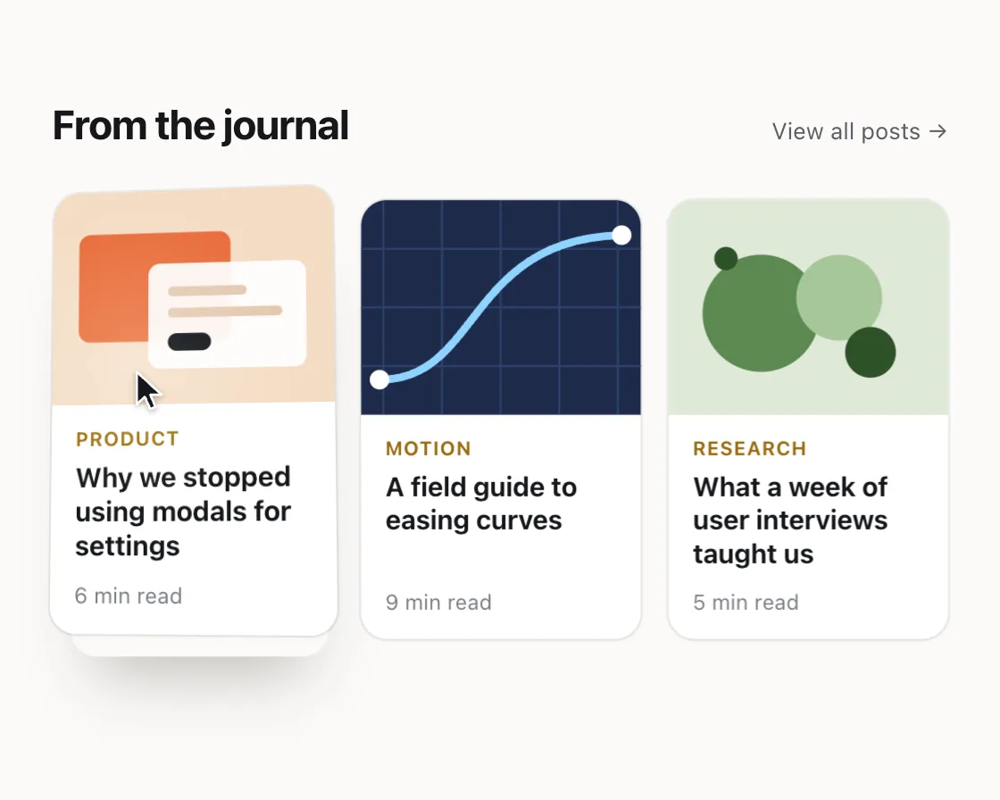

3D tilt card
3D tilt card is a DOM effect: the card turns toward the pointer, glare follows. One plain JavaScript file with no dependencies; add it with npx motion-library add tilt.

Open it live, tune it and copy the code
What is 3D tilt card?
A hovered article card turns toward the cursor, lifts slightly and a soft glare slides across it.
How does 3D tilt card work?
Cursor position across the card maps to rotateX and rotateY through springs, with shadow and glare following the same values; it settles flat on leave.
How do I add 3D tilt card to my website?
- In your project folder, run
npx motion-library add tilt. It writesanimations/tilt.js. Needs Node 18 or newer. - Import it and call it with a container element that has a size:
import fx from './animations/tilt.js'; const stop = fx(document.querySelector('#hero')); - Call
stop()to clean up, for example when a component unmounts.
Every setting below is also a flag, so you can install it already tuned: npx motion-library add tilt --maxTilt 30.
What settings can I tweak?
| Setting | Flag | Default | Range | Step |
|---|---|---|---|---|
| Max tilt (deg) | --maxTilt | 14 | 2 to 30 | 1 |
| Stiffness | --stiffness | 120 | 30 to 400 | 5 |
Specifications
- Renderer
- DOM (CSS and the Web Animations API)
- Category
- Hover & cursor
- Dependencies
- None
- File size
- 8.8 KB, unminified
- Interactive
- Yes: it responds to the pointer
- Reduced motion
- Respects prefers-reduced-motion
- Licence
- MIT-0: use it anywhere, no credit needed
Source code
// 3D tilt on article cards: where the cursor sits on a card becomes rotateX and rotateY, smoothed by a spring, and a
// soft glare slides across the surface with it. The card also lifts a little while it is hovered and settles flat when left.
// It feels right because the card turns toward you like a physical print, and the spring gives it weight instead of twitch.
const PARAMS = { maxTilt: 14, stiffness: 120 };
export default function (stage) {
const reduce = matchMedia('(prefers-reduced-motion: reduce)').matches;
const W = 540, H = 380;
const covers = [
`<svg viewBox="0 0 160 110" preserveAspectRatio="xMidYMid slice"><rect width="160" height="110" fill="#f4dcc4"/><rect x="22" y="22" width="78" height="56" rx="6" fill="#e86b3a"/><rect x="58" y="38" width="80" height="54" rx="6" fill="#fff" opacity=".92"/><rect x="68" y="50" width="40" height="5" rx="2.5" fill="#e3c7ad"/><rect x="68" y="61" width="58" height="5" rx="2.5" fill="#e3c7ad"/><rect x="68" y="74" width="22" height="9" rx="4.5" fill="#15171a"/></svg>`,
`<svg viewBox="0 0 160 110" preserveAspectRatio="xMidYMid slice"><rect width="160" height="110" fill="#1d2b4a"/><g stroke="#2e416b" stroke-width="1"><path d="M20 0v110M50 0v110M80 0v110M110 0v110M140 0v110M0 25h160M0 55h160M0 85h160"/></g><path d="M18 92C70 92 62 20 142 18" fill="none" stroke="#8fd3ff" stroke-width="4" stroke-linecap="round"/><circle cx="18" cy="92" r="5" fill="#fff"/><circle cx="142" cy="18" r="5" fill="#fff"/></svg>`,
`<svg viewBox="0 0 160 110" preserveAspectRatio="xMidYMid slice"><rect width="160" height="110" fill="#dfe9d8"/><circle cx="56" cy="58" r="30" fill="#5c8a52"/><circle cx="96" cy="50" r="22" fill="#a7c79a"/><circle cx="112" cy="78" r="13" fill="#2f5229"/><circle cx="38" cy="30" r="6" fill="#2f5229"/></svg>`,
];
const posts = [['Product', 'Why we stopped using modals for settings', '6 min read'], ['Motion', 'A field guide to easing curves', '9 min read'], ['Research', 'What a week of user interviews taught us', '5 min read']];
const root = document.createElement('div');
root.className = 'tl-root';
root.innerHTML = `<style>
.tl-root { position: absolute; inset: 0; overflow: hidden; background: #fbfaf8; font-family: system-ui, -apple-system, "Segoe UI", sans-serif; color: #15171a; }
.tl-scene { position: absolute; left: 0; top: 0; width: ${W}px; height: ${H}px; transform-origin: 0 0; }
.tl-head { position: absolute; left: 28px; right: 28px; top: 28px; display: flex; align-items: baseline; justify-content: space-between; }
.tl-head h2 { margin: 0; font-size: 22px; font-weight: 720; letter-spacing: -0.02em; }
.tl-head a { font-size: 12.5px; color: #5b6066; text-decoration: none; }
.tl-grid { position: absolute; left: 28px; right: 28px; top: 82px; display: grid; grid-template-columns: repeat(3, 1fr); gap: 16px; }
.tl-card { position: relative; border-radius: 14px; background: #fff; overflow: hidden; box-shadow: 0 0 0 1px rgba(20,24,30,.07), 0 1px 2px rgba(20,24,30,.05); will-change: transform; }
.tl-shadow { position: absolute; inset: 8px 6px -2px; border-radius: 14px; box-shadow: 0 22px 34px -14px rgba(30,24,10,.28); opacity: 0; will-change: opacity, transform; }
.tl-cover { display: block; height: 116px; } .tl-cover svg { display: block; width: 100%; height: 100%; }
.tl-body { padding: 12px 13px 14px; }
.tl-tag { font-size: 10.5px; font-weight: 650; letter-spacing: .04em; text-transform: uppercase; color: #9a6a10; }
.tl-title { margin-top: 6px; font-size: 14.5px; line-height: 1.25; font-weight: 650; letter-spacing: -0.01em; min-height: 54px; }
.tl-meta { margin-top: 10px; font-size: 11.5px; color: #7a7f85; }
.tl-glare { position: absolute; left: -100%; top: -100%; width: 200%; height: 200%; background: radial-gradient(circle at center, rgba(255,255,255,.55), rgba(255,255,255,0) 32%); pointer-events: none; mix-blend-mode: soft-light; opacity: 0; }
.tl-cur { position: absolute; left: 0; top: 0; z-index: 9; pointer-events: none; transition: opacity .2s; filter: drop-shadow(0 1px 1.5px rgba(0,0,0,.3)); }
</style><div class="tl-scene">
<div class="tl-head"><h2>From the journal</h2><a>View all posts →</a></div>
<div class="tl-grid">${posts.map(([tag, t, m], i) => `<div style="position:relative"><div class="tl-shadow"></div><article class="tl-card"><div class="tl-cover">${covers[i]}</div><div class="tl-body"><div class="tl-tag">${tag}</div><div class="tl-title">${t}</div><div class="tl-meta">${m}</div></div><div class="tl-glare"></div></article></div>`).join('')}</div>
</div>`;
stage.append(root);
const scene = root.querySelector('.tl-scene');
let s = 1;
const fit = () => { const w = stage.clientWidth, h = stage.clientHeight; s = Math.min(w / W, h / H, 1.3); scene.style.transform = `translate(${(w - W * s) / 2}px, ${(h - H * s) / 2}px) scale(${s})`; };
const ro = new ResizeObserver(fit); ro.observe(stage); fit();
const box = el => { let x = 0, y = 0, e = el; while (e && e !== scene) { x += e.offsetLeft; y += e.offsetTop; e = e.offsetParent; } return { x, y, w: el.offsetWidth, h: el.offsetHeight }; };
const at = (el, fx, fy) => () => { const b = box(el); return { x: b.x + b.w * fx, y: b.y + b.h * fy }; };
const pt = (x, y) => () => ({ x, y });
const cards = [...scene.querySelectorAll('.tl-card')].map(el => ({ el, glare: el.querySelector('.tl-glare'), shadow: el.previousElementSibling, rx: { x: 0, v: 0 }, ry: { x: 0, v: 0 }, lift: { x: 0, v: 0 } }));
// simulated cursor: drifts slowly across each card in turn; the real pointer takes over while it is on the stage
const C = cards.map(c => c.el);
const steps = [
{ to: pt(110, 360), move: 300, hold: 200 },
{ to: at(C[0], 0.2, 0.2), move: 700, hold: 150 },
{ to: at(C[0], 0.85, 0.8), move: 1300, hold: 350 },
{ to: at(C[1], 0.8, 0.25), move: 700, hold: 150 },
{ to: at(C[1], 0.2, 0.75), move: 1300, hold: 350 },
{ to: at(C[2], 0.3, 0.85), move: 700, hold: 150 },
{ to: at(C[2], 0.75, 0.2), move: 1300, hold: 350 },
{ to: pt(470, 360), move: 800, hold: 700 },
];
const ghost = document.createElement('div'); ghost.className = 'tl-cur';
ghost.innerHTML = '<svg width="17" height="24" viewBox="-1 -1 17 24"><path d="M0 0v17.6l4.3-4.1 2.9 6.6 2.9-1.2-2.8-6.5h6.1z" fill="#15171a" stroke="#fff" stroke-width="1.3" stroke-linejoin="round"/></svg>';
scene.append(ghost);
const inOut = t => t < 0.5 ? 8 * t ** 4 : 1 - (-2 * t + 2) ** 4 / 2;
let si = 0, t0 = performance.now(), from = steps[0].to(), real = null;
const c = { x: from.x, y: from.y };
function sim(now) {
let st = steps[si];
while (now - t0 > st.move + st.hold) { t0 += st.move + st.hold; from = st.to(); si = (si + 1) % steps.length; st = steps[si]; }
const k = inOut(Math.min(1, (now - t0) / st.move)), to = st.to(), dx = to.x - from.x, dy = to.y - from.y, bow = Math.sin(Math.PI * k) * 0.1;
c.x = from.x + dx * k - dy * bow; c.y = from.y + dy * k + dx * bow;
}
const toScene = e => { const r = scene.getBoundingClientRect(); return { x: (e.clientX - r.left) / s, y: (e.clientY - r.top) / s }; };
const onMove = e => { real = toScene(e); };
const onLeave = () => { if (real) { from = { ...real }; t0 = performance.now(); } real = null; };
root.addEventListener('pointermove', onMove); root.addEventListener('pointerleave', onLeave);
const spring = (p, t, k, dt) => { const d = 2 * Math.sqrt(k) * 0.7; p.v += (-k * (p.x - t) - d * p.v) * dt; p.x += p.v * dt; };
let last = performance.now(), raf;
function frame(now) {
const dt = Math.min(0.032, (now - last) / 1000); last = now;
if (real) { c.x = real.x; c.y = real.y; } else sim(now);
ghost.style.transform = `translate(${c.x - 1}px, ${c.y - 1}px)`;
ghost.style.opacity = real ? 0 : 1;
for (const k of cards) {
const b = box(k.el), nx = (c.x - b.x) / b.w * 2 - 1, ny = (c.y - b.y) / b.h * 2 - 1;
const on = Math.abs(nx) <= 1 && Math.abs(ny) <= 1;
// reduced motion: no tilt or lift; the shadow and glare still fade in on hover
const tilt = reduce ? 0 : PARAMS.maxTilt;
spring(k.rx, on ? -ny * tilt : 0, PARAMS.stiffness, dt);
spring(k.ry, on ? nx * tilt : 0, PARAMS.stiffness, dt);
spring(k.lift, on ? 1 : 0, 200, dt);
if (!reduce) k.el.style.transform = `perspective(700px) translateY(${-6 * k.lift.x}px) rotateX(${k.rx.x}deg) rotateY(${k.ry.x}deg) scale(${1 + 0.02 * k.lift.x})`;
k.shadow.style.opacity = Math.max(0, Math.min(1, k.lift.x));
k.shadow.style.transform = `translate(${-k.ry.x * 0.6}px, ${k.rx.x * 0.6 + 4}px)`;
k.glare.style.opacity = Math.max(0, Math.min(1, k.lift.x));
k.glare.style.transform = `translate(${(nx * 0.5 + 0.5) * 50}%, ${(ny * 0.5 + 0.5) * 50}%)`;
}
raf = requestAnimationFrame(frame);
}
raf = requestAnimationFrame(frame);
return () => { cancelAnimationFrame(raf); ro.disconnect(); root.removeEventListener('pointermove', onMove); root.removeEventListener('pointerleave', onLeave); root.remove(); };
}